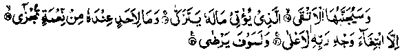

Chapter Seven
1. Abu Bakr Siddiq’s devotion of his entire wealth for Tabuk
The entire life-history of Abu Bakr Siddiq Radhiallaho anho is full of anecdotes on this subject of generosity, too numerous for the scope of this volume. It is common knowledge that, on the occasion of tire Tabuk expedition, when'Rasulullah Sallallaho alaihe wasallam exhorted the Sahabah to make contributions, Abu Bakr Siddiq Radhiallaho anho brought all that he possessed and, when Rasulullah Sallallaho alaihe wasallam asked him what he had kept for his family, he replied, "I have kept for them the good will of Allah and His Rasul.” A detailed account of this incident has been given in my Book, ‘The stories of Sahabah’, together with many other stories on the same subject. Those stories will reveal to the reader self sacrifice, sympathy towards others and generosity in spending for the cause of Allah with their peculiarities. If we were to possess, of these virtues, to some extent, everybody would be impressed by us With the Sahabah Radhiallaho anhum, such incidents were a matter of daily occurrence.
As for Abu Bakr Siddique Radhiallaho anho, it should suffice to say that Allah Ta'ala Himself has praised his magnanimity in the following Verses of the Holy Qur’an:

"Far removed from it (the flaming Fire) will be the righteous, Who gives his wealth (for the cause of Allah) that he may grow (in goodness). With no other motive for reward but seeking the purpose of his Lord, the Most High. (He does not owe anybody a favour, for which a reward is expected of him, in return. But spends solely for the pleasure of Allah). (al-Lail: 17-20)
These Verses affirm the very high standard of selfless devotion to Allah Ta'ala attained by Abu Bakr Radhiallaho anho. It is quite commendable to do good in return for a favour, but it cannot compare with an act of generosity performed on one’s own initiative. (Bayan-ul-Qur’an). Ibn-ul-Jauzi Rahmatullah alaihe says, "The Ulama are agreed that these Verses were revealed concerning Abu Bakr Siddiq Radhiallaho anho." Abu Hurairah Radhiallaho anho reports Rasulullah Sallallaho alaihe wasallam as saying: "No one’s property has benefited me more than that of Abu Bakr.’ Hearing this, Abu Bakr Radhiallaho anho wept and said, ‘O Rasulullah (Sallallaho alaihe wasallam) do I and my property belong to anyone else except you?" The Hadith has been transmitted on the authority of many Sahabah Radhiallaho anhum, through various chains of narration. In one version, Sa'eed-bin-Almusayyab adds, "Rasulullah. Sallallaho alaihe wasallam made use of Abu Bakr’s property as if it were his own". ‘Urwah Radhiallaho anho says that, on the day when Abu Bakr Radhiallaho anho embraced Islam, he had forty thousand Dirhams (silver-pieces) in his possession and he spent all of these on Rasulullah Sallallaho alaihe wasallam (i.e. in seeking his pleasure). Another Hadith says, "On the day when Abu Bakr Radhiallaho anho embraced Islam, he had in his possession forty thousand Dirhams; and when he made Hijrah (migration) to Medinah, he had no more than five thousand; The entire sum he had spent on different religious requirements and upon freeing of slaves who were being persecuted for their acceptance of Islam." (Tareekh-ul-Khulafaa). Abdullah bin Zubair Radhiallaho anho says: "Abu Bakr used to buy the physically weak slaves and set them free." Once his father, Abu Quhafah said to him, If at all you must set free slaves, I suggest that you should select those who are strong in body, so that they might help you at the hour of your need, “Abu Bakr Radhiallaho anho replied, I do not set them free for my own sake; I do so solely to please Allah Ta'ala." (Durre Manthur). The reward, granted by Allah Ta'ala, for helping the weak is far greater than that for helping strong people. Another Hadith reports Rasulullah Sallallaho alaihe wasallam saying:, "There is no one who has obliged me with a favour without my compensating him, except Abu Bakr. Verily, he has done me favours for which Allah Ta'ala Himself will reward him on the Day of Resurrection. And the property of no one has ever benefited me as has the property of Abu Bakr." (Tareekh-ul-Khulafaa).